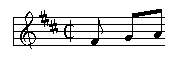
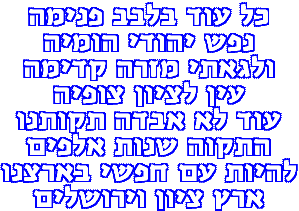

The National Anthems of Cuba
and Israel

Click on the flag to hear a midi
version of La Bayamesa
Words and Music by Perucho Figueredo
Rendition by Walter
Voigt
La Bayamesa
The National Anthem of Cuba
Al combate corred bayameses
que la Patria os contempla orgullosa
no temáis una muerte gloriosa,
que morir por la Patria es vivir.
En cadenas vivir, es vivir
en oprobio y afrenta sumido.
¡Del clarín escuchad el sonido,
a las armas valientes corred!
Run to combat,
men of Bayamo
may the motherland be proud of you.
Don't fear a glorious death,
for to die for the motherland is to live.
To live in chains
is to live
under shame and indignity.
Hear the clarion call,
to your arms, brave ones, run!
(Click on the
flag to hear a midi version of Hatikvah)
Hatikvah - The Hope.
The National anthem of Israel

Kol od balevav penimah
nefesh Yehudi homiyah
Ulefa-atej mizrach kadimah
'ayin LeTsion, tsofiah.
Od lo awvdah tikwatenu
ha'tikvah bat sh'not alpayim
liheyot am chofsi beartsenu
erets Tsion birushalayim.
As long as in the Jewish heart
the soul is still alive,
the eye of desire will not rest
to look eastward for Tsion.
Our hope shall not perish
our age old hope
to live as a free people in our country
Eretz Tsion and Yerushalayim.